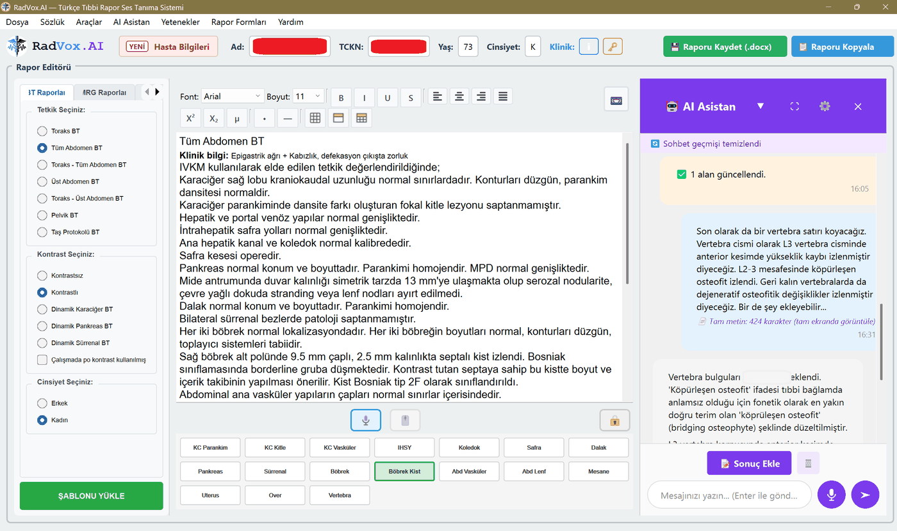

Bilgisayarınız Türkçe radyoloji diktesini kaldırır mı?
Bu sayfa tarayıcınızın görebildiği kadarıyla bilgisayarınıza
bakar ve RadVox'u nasıl çalıştıracağını söyler. Kurulum yok, indirme yok,
hiçbir veri gönderilmez.

Uygunluğunu ölçtüğünüz program: RadVox.AI — solda
hızlı rapor giriş formları, ortada rapor editörü ve sesli dikte,
sağda AI asistan.
Telefondasınız
Bu araç rapor yazdığınız bilgisayarı ölçer, telefonu değil.
Bağlantıyı bilgisayarınızda açın; sonuç birkaç saniyede çıkar.